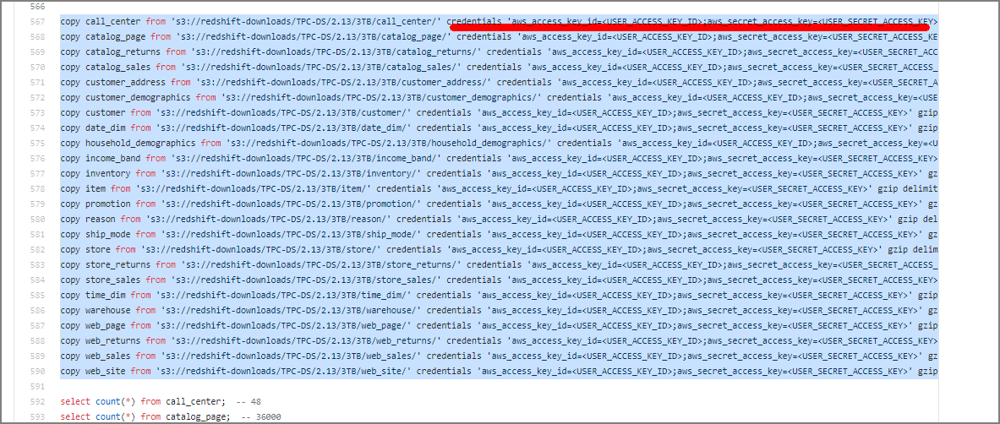

RedshiftにTPC-DSデータをロードしてクエリ実行
Redshiftのベンチマークにも使用されているTPCDSのデータロードと分析クエリの実行をやってみた。一定容量のデータ（100GBから1PBまで）が用意されていて、大容量データに対する分析用クエリを流したい時に簡易実行できる。
TPCDSベンチマークについてはこちら。小売製品サプライヤーの意思決定支援機能をモデル化している模様。
リソース確認
スクリプト系はamazon-redshift-utilsにまとまっている。
amazon-redshift-utils/src/CloudDataWarehouseBenchmark/Cloud-DWB-Derived-from-TPCDS at master · awslabs/amazon-redshift-utils · GitHub https://github.com/awslabs/amazon-redshift-utils/tree/master/src/CloudDataWarehouseBenchmark/Cloud-DWB-Derived-from-TPCDS
データロード用のスクリプトは、US-EAST-1リージョンにあるので東京リージョンでRedshiftを実行する場合、転送オーバーヘッドには注意が必要かもしれない。
https://s3.console.aws.amazon.com/s3/buckets/redshift-downloads?prefix=TPC-DS%2F®ion=us-east-1
手順概要
-
ddl.sqlを編集し、<USER_ACCESS_KEY_ID>と<USER_SECRET_ACCESS_KEY>を任意の有効なS3認証情報に置き換える。
-
データセットを読み込むための新しいデータベースを作成します
-
作成したデータベースに接続し、ddl.sqlを実行
※データの規模やデータウェアハウスのサイズによっては、数時間かかる場合があるので注意
-
query_0.sql等を実行して実行時間を計測する
手順
-
ddl.sqlを編集
下記部分を自分のクレデンシャル情報に書き換える。対象のddl.sqlはこちら。git cloneなどでローカルに落として上で編集。

もちろんIAMロールを利用するように書き換えても大丈夫
copy call_center from 's3://redshift-downloads/TPC-DS/2.13/3TB/call_center/' iam_role 'arn:aws:iam::xxxxxxxxxxxxxxx:role/myRedshiftRole' gzip delimiter '|' EMPTYASNULL region 'us-east-1';
copy catalog_page from 's3://redshift-downloads/TPC-DS/2.13/3TB/catalog_page/' iam_role 'arn:aws:iam::xxxxxxxxxxxxxxx:role/myRedshiftRole' gzip delimiter '|' EMPTYASNULL region 'us-east-1';
copy catalog_returns from 's3://redshift-downloads/TPC-DS/2.13/3TB/catalog_returns/' iam_role 'arn:aws:iam::xxxxxxxxxxxxxxx:role/myRedshiftRole' gzip delimiter '|' EMPTYASNULL region 'us-east-1';
～中略～
2. データベースの作成
drop database tpcds_3tb;
CREATE DATABASE tpcds_3tb;
3. 作成したデータベースに対してロードの実施
psql -h redshift-cluster.xxxxx.ap-northeast-1.redshift.amazonaws.com -U awsuser -d tpcds_3tb -p 5439 -f /home/ec2-user/amazon-redshift-utils-master/src/CloudDataWarehouseBenchmark/Cloud-DWB-Derived-from-TPCDS/3TB/ddl.sql
テーブル作成、データロード、件数確認が実行される。（時間が掛かるので注意）
4. queryを実行
query_0.sql ～ query_10.sqlまで用意されているので、適宜実行。ベンチマークする際にはリザルトキャッシュの無効化なども忘れずに。
psql -h redshift-cluster.xxxxx.ap-northeast-1.redshift.amazonaws.com -U awsuser -d tpcds_3tb -p 5439 -f /home/ec2-user/amazon-redshift-utils-master/src/CloudDataWarehouseBenchmark/Cloud-DWB-Derived-from-TPCDS/3TB/queries/query_0.sql
関連しているかもしれない記事
- Redshiftへのデータロード
- Aurora PostgreSQLのフェイルオーバー時間の計測
- Aurora PostgreSQLとRDSの比較メモ（リンク集）
- 『AWS 認定 DevOps エンジニア – プロフェッショナル』合格に向けて
- AWS Elastic Beanstalkの殴り書きメモ